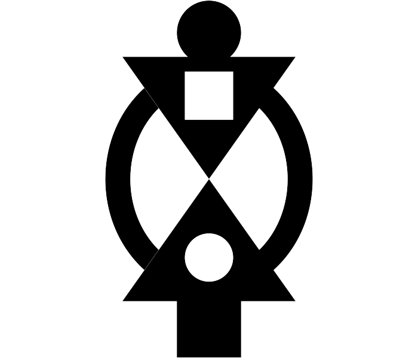
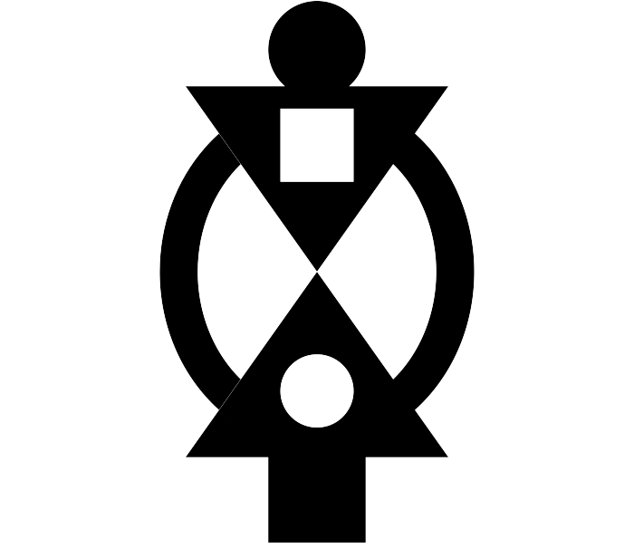

The Asona Clan
PROFILE OF Nana Yaw Barima Twum Sarkodie I,
AKWAMUHENEBiography
Nana Yaw Sarkodie Aboagye was born on the 21st of May, 1970 to Mr. Samuel Yaw Aboagye of the Aduana Okyere
Wurukuo family of Akyem Tafo and the late Madam Agatha Frema Aboagye of the Asona Nnuro Abusua of Akyem Awisa, a royal from the Akyem Awisa Akwamu Stool.
Wurukuo family of Akyem Tafo and the late Madam Agatha Frema Aboagye of the Asona Nnuro Abusua of Akyem Awisa,
a royal from the Akyem Awisa Akwamu Stool. Wurukuo family of Akyem Tafo and the late Madam Agatha Frema Aboagye of the Asona Nnuro Abusua of Akyem Awisa, a
royal from the Akyem Awisa Akwamu Stool. As the son of a cocoa purchasing officer and a professional female teacher,
his parents were confronted with constant transfers. Nana was sent to St. Johns Preparatory School, Accra, as a boarder for his early childhood education where he successfully passed his common entrance examination. He gained admission to Mfanstipim School in 1984. Through discipline, sports, and hard work, he was nicknamed “Submarine” by one of the tutors which was popularised by his peers in the school. But back home in his hometown, his folks called him “kwabotwe,” synonymous with the Mfantsipim School he attended. Having successfully passed his G.C.E O’ Level examination in 1989, he proceeded to Techiman Secondary School to pursue his G.C.E A’ Level Education in Arts between 1990 and 1992.
Infrastructure Committee on the Board. Nana plays Scrabble, socializes, and loves playing and watching football. Nana has also held several political portfolios some of which include the following: National Youth Secretary of the New Patriotic Party between 1994 and 2002, Government Appointee for Birim South District Assembly, Chairman of the Justice And Security Committee of Birim South District and also a member of the Council of Elders of New Nana holds a Post-Graduate Diploma Certificate in Urban Planning, Environmental Sanitation and Management (KNUST-AISWAM), a Diploma in Marketing (LCM London), and a Diploma in Public Relations (LCM London). The Akwamuhene of Akyem Awisa is a member of the Association of Chartered Institute of Marketing, CIMA GHANA.
Nana Akwamuhene has participated in a lot of capacity-building workshops/seminars both locally and internationally. In July and September 2001, Nana attended seminars in Gummers Bach, Germany on Civil Society: Liberation From State Rule. Currently, Nana is a Board Member of the National Sports Authority and also serves as Chairman of the Patriotic Party of Akim Swedru Constituency. Nana Akwamuhene is married to Mrs. Comfort Sarkodie Aboagye (Nee Comfort Akuoko) domiciled in the United States Of America with four children, namely Akosua Akyaa Sarkodie Aboagye, Kwadwo Sarkodie Aboagye, Nana Yaa Sarkodie Aboagye and Kofi Akuoko Sarkodie Aboagye.
Presently, Nana holds an Executive Masters In Business Administration. December 2023 marks the TENTH ANNIVERSARY of the ENSTOOLMENT of Nana Yaw Barima Twum Sarkodie I.
 

Career and Achievements
Educational Background
Attended Mfanstipim School, known for his nickname “Submarine” due to his strategic insights and later pursued higher education in Urban Planning and Environmental Sanitation at KNUST.
Professional Life
An influential figure in both the political and academic sectors, serving as a board member on various committees, and greatly impacting Ghana's national sports development.
Personal Life
Family
Nana Yaw is married to Mrs. Comfort Sarkodie Aboagye. Together they have four children, nurturing a strong and loving family.
Professional Experience
Senior Project Manager - Tech Solutions Inc.
Led a team of 50+ to deliver comprehensive digital transformations, achieving a 40% improvement in efficiency for our clients.
Lead Developer - Innovatech Ltd.
Developed multiple award-winning applications that revolutionized customer interactions for various businesses.

Nana Yaw Barima Twum Sarkodie I, during his enstoolment; 26th December, 2013.

Nana and his lovely Wife, Mrs. Comfort Sarkodie Aboagye.
Nana's Father at the Akwamuhene's 10th Anniversary.